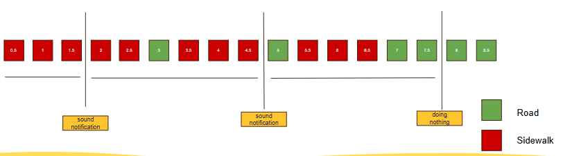

SRS Documentation
Introduction
Phát triển hệ thống bao gồm AI Unit và Ứng dụng Android cho phép phát hiện vị trí xe đạp đang di chuyển, từ đó đứa ra cảnh báo người dùng, giúp nâng cao ý thức người sử dụng xe đạp.
Hệ thống bao gồm:
Ứng dụng được phát triển trên thiết bị AI Unit do khách hàng cung cấp (RK1808).
Ứng dụng điện thoại Android.
Scope
In-Scope
Phát triển ứng dụng trên thiết bị là điện thoại, cho phép phát cảnh báo tới người dùng khi phát hiện người dùng đang di chuyển trên vỉa hè. Phase 2 tập trung phát triển ứng dụng Android và tích hợp với AI Unit đã có.
Các tính năng chính:
Xác định vị trí xe đang di chuyển, phát cảnh báo đi chậm.
Kiểm tra connect giữa thiết bị và điện thoại
Ứng dụng điện thoại tự động lấy ảnh từ AI Unit khi phát hiện xe thay đổi vị trí (vỉa hè/lòng đường).
Xóa thông tin nhạy cảm trong ảnh.
Ảnh được mã hóa trên AI Unit, chỉ ứng dụng điện thoại mới có thể đọc được.
Out-of-Scope
Không hỗ trợ ứng dụng Ios.
Không hỗ trợ lunching app lên App Store.
Ứng dụng không hỗ trợ chạy nền.
Không optimize model AI đã phát triển tại phase 1.
Không hỗ trợ UI/UI customer.
Overall Description
Contraints
Phát triển trên thiết bị phần cứng thiết bị do khách hàng cung cấp (RK1808).
Model phát triển phải convert sang định dạng RKNN để có thể implement được lên thiết bị phần cứng.
Security
Phát triển tính năng xác thực ứng dụng: chỉ ứng dụng do HBLAB phát triển mới có thể nhận được bản tin từ AI Unit.
Ảnh được mã hóa ngay trên AI Unit trước khi lưu vào bộ nhớ. AI Unit chỉ có thể mã hóa, không thể tự đọc lại ảnh. Chỉ ứng dụng điện thoại nắm giữ thông tin giải mã mới đọc được ảnh.
Ảnh pull về PC từ AI Unit cần phải có ứng dụng chuyên biệt từ HBLAB để giải mã. Sau khi giải mã mới có thể xem được.
Functional Requirements
FR-DA: Device Application
Content |
Detail |
|---|---|
Description |
Phát triển ứng dụng trên thiết bị phần cứng do khách hàng cung cấp. |
Input |
Ảnh do camera thu được. |
Output |
Log ứng dụng. Ảnh được mã hóa lưu vào bộ nhớ thiết bị, sẵn sàng để ứng dụng điện thoại lấy về. |
Preconditions |
Thiết bị được cấp nguồn đầy đủ. Bộ nhớ trong chưa đầy. Thiết bị được liên kết với camera. |
Postconditions |
Lưu log chương trình. |
Step |
Desciption |
Business Logic Acceptance Criteria |
|---|---|---|
|
Cấp nguồn cho thiết bị. |
Thiết bị tự động chạy ngay khi được cấp nguồn. |
|
Kết nối cổng USB type C của AI Unit với ứng dụng điện thoại. |
Kết nối thành công |
|
Mở giao diện ứng dụng điện thoại Mở giao diện setup AI Unit. |
Giao diện cho phép setup AI Unit được mở ra. Cho phép setup tối thiểu: Mode hoạt động của AI Unit (running/stopped). Thời giữa 2 lần chụp ảnh liên tiếp (intervals). |
|
Sau khi phát hiện xe thay đổi vị trí (vỉa hè/lòng đường), ứng dụng điện thoại tự động lấy ảnh tương ứng từ AI Unit về. |
Lấy được ảnh overlay và ảnh raw lưu vào bộ nhớ local storage của điện thoại. Ảnh được mã hóa sẵn trên thiết bị trước khi lấy về, ứng dụng điện thoại giải mã sau khi nhận được. Lưu log |
Step |
Desciption |
Business Logic Acceptance Criteria |
|---|---|---|
|
Ứng dụng cho phép update file config bằng PC. |
File config cho phép điều chỉnh thông số của ứng dụng trên thiết bị phần cứng. Tham khảo phụ lục 1. Ứng dụng khởi động khi được cấp nguồn, hoạt động với chế độ phát hiện vị trí xe đạp. Thời gian giữa 2 lần chụp ảnh liên tiếp: chạy đúng theo setup. Hoạt động với đúng model AI, lưu ảnh vào thư mục yêu cầu. File config có thể được update từ PC thông qua ADB Interface. |
FR-LW: Location Warning
FR-LW-1: Location Detection
Content |
Detail |
|---|---|
Description |
Tính năng cho phép sử dụng Camera cho phép thu thập hình ảnh trong quá trình User sử dụng xe đạp. Sau đó sử dụng model AI phân tích hình ảnh thu được, từ đó cho phép phát hiện vị trí xe đạp đang di chuyển (vỉa hè/lòng đường). |
Input |
Ảnh thu thập từ Camera. |
Output |
AI unit trả về thông tin vị trí xe đang di chuyển: vỉa hè/lòng đường. |
Preconditions |
Thiết bị được cấp nguồn đầy đủ. |
Postconditions |
Lưu log chương trình. Thông tin ảnh overlay. Thông tin ảnh raw. |
Step |
Desciption |
Business Logic Acceptance Criteria |
|---|---|---|
|
Sử dụng model AI xử lý hình ảnh thu được, từ đó khoanh vùng được khu vực vỉa hè, lòng đường |
mIoU theo phase 1 |
|
Dựa trên hình ảnh thu được, đưa ra thông tin vị trí xe đạp đang di chuyển (làn đường/vỉa hè). |
Ứng dụng cho phép phát hiện khu vực vỉa hè, lòng đường. Từ đó xác định được vị trí xe đạp đang di chuyển. |
FR-LW-2: Warning Notification
Content |
Detail |
|---|---|
Description |
Ứng dụng điện thoại định kỳ đọc thông tin vị trí xe đạp từ AI Unit thông qua ADB interface. Ứng dụng điện thoại sẽ phát cảnh báo sau khi phát hiện xe đang di chuyển trên vỉa hè (Y) lần liên tiếp. |
Input |
Thông tin vị trí xe đạp được lấy từ FR-LW-1. |
Output |
Ứng dụng phát âm báo “Xin hãy di chuyển chậm lại” bằng tiếng Nhật. Ứng dụng hiển thị chuỗi kí tự cảnh báo lên màn hình điện thoại. |
Preconditions |
Thiết bị được cấp nguồn đầy đủ. Thiết bị phần cứng và ứng dụng điện thoại phải được kết nối. Ứng dụng điện thoại được mở sẵn. |
Postconditions |
Lưu log tại ứng dụng phần cứng, ứng dụng điện thoại. Phát âm thông báo thành công. Hiển thị kí tự thành công |
Step |
Desciption |
Business Logic Acceptance Criteria |
|---|---|---|
|
Ứng dụng điện thoại định kỳ đọc thông tin vị trí xe đạp mới nhất từ thiết bị AI Unit thông qua adb. |
Thông tin vị trí mới được đọc thành công theo đúng chu kỳ. Lưu log. |
|
Nếu: Điện thoại nhận được thông tin xe đạp đang di chuyển trên vỉa hè. Thì: Điện thoại hiển thị cảnh báo trên màn hình và phát âm thanh cảnh báo theo nội dung đã cài đặt. |
Ứng dụng phát thông báo theo rule sau:  Phân tích ví dụ thực tế: Setup ban đầu: Interval: 0.5 giây Số lần phát hiện liên tiếp: 3 lần Khoảng cách giữa 2 lần cảnh báo: 3 giây Kết quả chạy: Khi bắt đầu khởi động, ứng dụng điện thoại sẽ phát âm ở 1.5 và 4.5. Tại giây số 7.5 âm thanh không được kêu, do chúng tôi chỉ check 3 trạng thái cuối cùng gần với thời điểm phát thông báo nhất Nếu tại giây số 4.5, trạng thái xe đạp là road (xanh lá), 3 trạng thái vị trí tiếp theo là vỉa hè (đỏ) thì tại giây số 6, điện thoại sẽ phát âm cảnh báo Lưu log |
Step |
Desciption |
Business Logic Acceptance Criteria |
|---|---|---|
|
Mở giao diện setup ứng dụng |
Mở giao diện thành công |
|
Điền thông tin số lần phát hiện xe đang đi trên vỉa hè liên tiếp để ứng dụng phát cảnh báo. |
Thời gian giữa 2 lần phát thông báo sẽ là: |
|
Điền thông tin thời gian giữa 2 lần phát thông báo liên tiếp |
Khoảng thời gian này không được nhỏ hơn ( |
|
Điền nội dung văn bản hiển thị trên màn hình khi phát cảnh báo. |
Cho phép nhập nhiều dòng. Nội dung hiển thị đúng theo thiết lập. |
|
Chọn kiểu chữ từ danh sách có sẵn. Điền cỡ chữ mong muốn. |
Hiển thị preview ngay trên giao diện theo đúng kiểu chữ và cỡ chữ đã chọn. |
|
Điền thời gian (giây) cảnh báo hiển thị trên màn hình sau mỗi lần phát. |
Thời gian hiển thị phải nhỏ hơn |
FR-CL: Clear Sensitive Infomation
FR-CL-1: Image Handling
Content |
Detail |
|---|---|
Description |
Khi xe thay đổi vị trí (vỉa hè/lòng đường), ứng dụng điện thoại tự động lấy ảnh tương ứng từ AI Unit về thông qua ADB interface. Ứng dụng Android sẽ thực hiện làm mờ khuôn mặt trước khi lưu trữ. |
Input |
Ảnh thu thập từ camera thiết bị. |
Output |
Ứng dụng Android thực hiện làm mờ khuôn mặt trước khi lưu trữ ảnh. |
Trigger |
Ngay sau khi phát hiện xe thay đổi vị trí (vỉa hè/lòng đường). |
Preconditions |
Thiết bị được cấp nguồn đầy đủ. Thiết bị hỗ trợ dây USB Type C, cho phép lấy thông tin qua ADB Interface. (Nếu muốn hỗ trợ cổng khác, thiết bị cũng cần phải hỗ trợ). |
Postconditions |
Lưu log chương trình. Ảnh đã được làm mờ lưu vào bộ nhớ. |
Step |
Desciption |
Business Logic Acceptance Criteria |
|---|---|---|
|
Khi phát hiện xe thay đổi vị trí, ứng dụng điện thoại lấy ảnh tương ứng (ảnh raw, ảnh overlay) từ AI Unit về. |
Lấy được tất cả các ảnh (ảnh raw, ảnh overlay sau xử lý). Ảnh được mã hóa sẵn trên thiết bị, chỉ ứng dụng HBLab tự phát triển mới có thể đọc được ảnh. |
Điện thoại nhận ảnh |
Ứng dụng điện thoại tiếp nhập ảnh, lưu vào kho lưu trữ |
Lưu ảnh thành công Gửi thông báo về cho ứng dụng |
FR-CL-2: Clear Sensitive Info
Content |
Detail |
|---|---|
Description |
Cho phép ứng dụng điện thoại xóa/làm mờ những thông tin nhạy cảm khỏi ảnh (mặt người đi đường) để tránh vi phạm luật tại Nhật. |
Input |
Ảnh đã được mã hóa nhận được từ thiết bị AI Unit đã được ứng dụng điện thoại lấy về. |
Output |
Ảnh chứa khuôn mặt người đi đường đã được làm mờ trên ứng dụng điện thoại. |
Trigger |
Ngay sau khi ứng dụng điện thoại lấy ảnh từ device AI Unit về. |
Preconditions |
Nhận được ảnh từ thiết bị. |
Postconditions |
Lưu log chương trình. Ảnh đã được làm mờ lưu vào bộ nhớ local. |
Step |
Desciption |
Business Logic Acceptance Criteria |
|---|---|---|
|
Phát hiện khuôn mặt người đi đường trong ứng dụng Android |
Phát hiện tất cả các khuôn mặt trong ảnh |
|
Làm mờ khuôn mặt |
Cần làm mờ khuôn mặt hết mức có thể. |
|
Lưu các ảnh đã được làm mờ khuôn mặt |
Lưu ảnh raw và ảnh overlay tại bộ nhớ local. Không lưu tại gallery của điện thoại. |
FR-CC: Connection Checking
Content |
Detail |
|---|---|
Description |
Cho phép kiểm tra, thông báo trạng thái connect giữa thiết bị và điện thoại |
Input |
Thông tin connect |
Output |
Thông báo connect/disconnect. |
Preconditions |
Thiết bị được cấp nguồn đầy đủ. Required: AI Unit phải có cổng USB Type C thì mới kết nối được với Android Type C cho phép lấy thông tin qua ADB Interface. (Nếu muốn hỗ trợ cổng khác, AI unit cũng cần phải hỗ trợ cổng khác). |
Postconditions |
Lưu log chương trình. |
Step |
Description |
Business Logic Acceptance Criteria |
|---|---|---|
|
Mở ứng dụng |
Hiển thị trạng thái điện thoại chưa được kết nối với ứng dụng |
|
Kết nối vật lý dây usb |
Ứng dụng hiển thị thông báo: đã connect với device |
|
Ngắt kết nối vật lý dây usb |
Ứng dụng hiển thị thông báo: đã disconnect với device. |
Non-Function Requirement
Follow theo phase 1:
MIoU: 70%
Accuracy: 70%
Appendix
Config file
Key |
Desciption |
Value |
|---|---|---|
|
Chọn cách ứng dụng khởi động |
Datatype: String
|
|
Chọn chế độ hoạt động |
Datatype: String
|
|
Thời gian giữa 2 lần liên tiếp chụp ảnh. Có thể thay đổi khi ứng dụng đang chạy, không cần khởi động lại. |
Datatype: Float (unit: giây) |
|
Đường dẫn đến folder chưa model |
Datatype: String Sample: “/userdata/models/ddrnet_rk1808.rknn” |
|
Đường dẫn đến thư mục lưu trữ ảnh |
Datatype: String Sample: “/userdata/captures” |